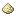

Prospector's Drill

Prospector's Drill
The Prospector's Drill is unique from other prospecting tools in that its scanning area is not a cube and not centered on the clicked block.
The scan area is a 7x25x7 box where the square faces are parallel to the clicked face. Additionally, the scan area is shifted away from the clicked face by 10 blocks.

A mold for the tool head can be knapped from clay, as seen above, which can be used to cast low tier metals.

Tier VI
A Prospector's Drill Head can also be smithed out of a tuyere of any tool metal.


The head can then be crafted with two sticks to make a Prospector's Drill